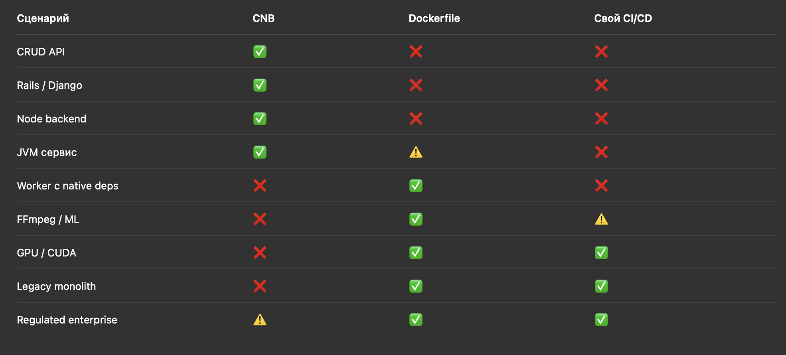

Links
devcode start-up Предложения для лендинга
Description
- Render.com — деплоят на AWS, но дают UX похожий на Heroku
- Railway.app — аналогично, абстракция поверх облаков
- Porter — open-source PaaS поверх Kubernetes в любом облаке
Нижняя граница: кто НЕ наши клиенты
| Что делают | Инструмент | Где упираются | Точка перехода к нам |
|---|---|---|---|
| • Лендинги, простые сайты, портфолио • Встроенные формы, простая аналитика • Без кода | Tilda | • Нет кастомной бизнес-логики • Ограниченные интеграции с API • Сложные формы, воркфлоу • Нет собственной БД | ”Нам нужен личный кабинет пользователя” |
| • Быстрое прототипирование, обучение • Простые веб-приложения, боты • Collaborative coding | Replit | • Production uptime не гарантирован • Нет масштабирования нагрузки • Нет compliance и безопасности для бизнеса | ”Появились первые платящие пользователи, нужна надежность” |
| • Генерация прототипов через AI • Простые CRUD-приложения • Быстрый MVP для валидации | Lovable | • AI не генерирует сложную бизнес-логику • Нет производительности, оптимизации • Нет интеграций с legacy | ”Нужно доработать сгенерированное под наши процессы” |
| • Production-ready Next.js/React/Vue • Serverless functions • CDN, автомасштабирование • CI/CD из коробки | Vercel | • Цена растет (500/мес) • Нет долгоживущих процессов (websockets, cron) • Нет stateful приложений • Ограничения БД • Нет VPN, dedicated resources, compliance | ”Счет вырос до $500/мес при росте трафика” |
Почему они не пойдут к нам:
- Vercel Free tier проще, чем наш PaaS с интеграцией
- Когнитивная нагрузка: “Зачем разбираться с подключением облака?”
- Нет денег на платное решение
Наша целевая аудитория
| Сегмент | Характеристики | Боль | Критерии | Value Proposition |
|---|---|---|---|---|
| Те, кто переросли Vercel/Heroku | • Есть платящие клиенты • Траффик: от 100K запросов/мес • Счет: 200-1000 $/мес • Команда: 3-10 чел | ”Vercel дорогой, а Yandex Cloud сложный” | • Счет > $500/мес • Нужны воркеры, websockets • Нужен контроль над инфрой • Хотят оптимизировать расходы | • Простота Vercel + цена Yandex Cloud • На 40% дешевле при том же DX |
| Компании с необходимостью соблюдения Compliance | • Данные в РФ (152-ФЗ) • Работа с госструктурами, банками • Команда: 5-50 чел | ”Vercel не подходит по закону, а DevOps не хотим нанимать” | • Локализация данных • Сертификаты, аудит безопасности • Интеграции с ЕСИА, ГосУслугами | • Compliance из коробки • Интеграции с российскими облаками • Документация для аудита |
| Аутсорс-студии | • Много проектов (10-50) • Нужно быстро разворачивать окружения • Делают проекты для клиентов | ”Каждому клиенту настраивать инфру — долго и дорого” | • > 5 проектов в работе • Изолированные окружения • Клиенты хотят владеть инфрой (BYOC) • Нужен white-label | • Multi-tenancy из коробки • Автоматизация создания окружений • Передача проекта “под ключ” |
| Enterprise с legacy Вот тут пока под вопросом | • Выручка > 100 млн руб/год • Есть legacy-системы • Нужна гибридная инфра (облако + on-premise) • Бюджет есть, но нет DevOps | ”Хотим модернизировать, но не знаем как” | • Существующая инфраструктура • Кастомные интеграции • Готовы платить за поддержку | • Постепенная миграция в облако • Интеграция с существующими системами • Консалтинг + платформа |
Ключевые метрики сегментации
| Критерий | Не наши клиенты | Сегмент 1-2 | Сегмент 3-4 |
|---|---|---|---|
| Траффик | < 100K req/мес | 100K-10M req/мес | > 1M req/мес |
| Расходы на хостинг | $0-100/мес | $200-1000/мес | $1000+/мес |
| Размер команды | 1-2 чел | 3-10 чел | 10-50+ чел |
| Стадия проекта | MVP, идея | Product-market fit | Рост, масштабирование |
| Готовность платить | $0-50/мес | $200-2000/мес | $2000-10000+/мес |
| Compliance | Не важно | Важно (РФ) | Критично |
| Кол-во проектов | 1-2 | 1-5 | 5-50+ |
| Итого | |||
| ЦА: Проритет на старте - это растущие российские стартапы и аутсорс-студии, которые уже переросли Vercel/Heroku | |||
| Проблема: Высокие счета за зарубежный PaaS или сложность настройки российских облаков | |||
| Продукт: PaaS-платформа с интеграцией российских облаков | |||
| Возможности: Простоту деплоя как у Vercel + контроль и цены Yandex Cloud | |||
| В отличие от конкурентов: Vercel (дорого) и чистого Yandex Cloud (сложно) | |||
| Мы даем: Экономию до X% на инфраструктуре + деплой за Y минут без DevOps |
Верхняя граница: кто НЕ наши клиенты Крупный Enterprise, который нужно больше гибкости, чем дает DevOps-как-черный ящик
| Ограничение | Что нужно Enterprise | Где упирается твой PaaS | Критерий перехода |
|---|---|---|---|
| Архитектура | • Микросервисы (50-200+ сервисов) • Service mesh (Istio, Linkerd) • Сложный routing, canary deploys • Распределенные транзакции | • Заточен под монолит или несколько сервисов • Нет гибкости для inter-service коммуникации • Ограниченный контроль над сетью | • > 20 микросервисов • Нужны продвинутые deployment strategies |
| Кастомизация и контроль | • Полный контроль CI/CD (build, test, security) • Кастомные build steps • Self-service + centralized governance • Policy-as-code | • Фиксированные buildpacks и pipeline stages • Ограниченная кастомизация • Нет multi-tenancy между командами | • Нужны кастомные build процессы • > 5 команд с разными требованиями • Approval workflow для production |
| Legacy и внутренние системы | • SSO/SAML (AD, Okta) • On-premise БД, очереди, storage • Гибридная инфраструктура • VPN, private networking • Интеграция с SAP, 1C, Oracle | • Заточен под публичные облака • Сложно интегрировать с закрытыми сетями • Нет enterprise-интеграций из коробки | • Нужен доступ к on-premise • Требуется dedicated infrastructure • Данные не должны покидать периметр |
| Observability и governance | • Centralized logging/metrics/tracing • Distributed tracing между сервисами • Cost allocation по командам • Детальные audit logs • Compliance отчеты (SOC2, ISO) | • Базовый мониторинг и логи • Нет детального cost tracking • Ограниченные audit capabilities | • > 10 команд, нужен chargeback • Trace каждого запроса через все сервисы • Compliance audit за годы |
| Масштабируемость и производительность | • Десятки тысяч RPS • Multi-region globally • Dedicated resources • SLA 99.99%+ с penalties | • Shared infrastructure • Простой автоскейлинг • SLA 99.9% | • Траффик > 10M req/день • Latency < 50ms globally • Критичность требует 99.99%+ |
| Vendor lock-in | • Возможность миграции • Open standards, портируемость • Self-hosted опция | • Проприетарные API, конфигурации • Сложная миграция • Нет self-hosted версии | • Стратегия ухода от lock-in • Слияния/поглощения • Желание in-house IDP |
Порог перехода в Enterprise IDP
| Метрика | Твой PaaS работает | Enterprise нужно больше |
|---|---|---|
| Сервисов | 1-20 | 50-200+ |
| Команд | 1-5 | 10-100+ |
| Траффик | До 10M req/день | > 10M req/день |
| CI/CD | Фиксированный pipeline | Полная кастомизация |
| Legacy | Нет интеграций | Критично |
| Регионы | 1-2 | 5-10+ |
| SLA | 99.9% | 99.99%+ |
| Governance | Базовый | Chargeback по командам |
| Self-hosted | Нет | Обязательно |
| Тут я бы предложил рассматривать Примеры IDP платформ на которые можно ориентироваться в будущем |
- Humanitec (Platform Orchestrator)
- Porter (Kubernetes-based IDP)
- Qovery (multi-cloud IDP)
С чего можно начать - возможных пути:
Путь 1: “Managed onboarding”
- Сделать онбординг максимально простым:
- “Подключите Yandex Cloud через OAuth” → автоматическое создание необходимых ресурсов
- “Выберите регион и размер БД” → твой сервис сам создает Managed PostgreSQL
- Клиент видит только высокоуровневые настройки
- Под капотом создание ресурсы через API в облаке клиента
- Клиент получает: простоту Heroku + владение инфраструктурой
Путь 2: “Bring Your Own Cloud” (BYOC) - с него и начинаем
- Клиент сам создает аккаунт в Yandex/VK Cloud
- Твой PaaS требует API-ключи с определенными правами
- Клиент сам платит облачному провайдеру напрямую
- Минус: выше порог входа, но ниже риски
Плюс подумать на будущее, чтобы дать дополнительную ценность PaaS:
- Архитектура:
- Multi-tenancy с изоляцией (namespace/VPC per customer)
- API-first (все функции через API)
- Event-driven (события для audit, интеграций)
- Multi-cloud dashboard (единый интерфейс для управления ресурсами разных облаков
- Security:
- RBAC (даже если пока roles = admin/user)
- Audit logs (кто что делал, когда)
- Secrets management (не хранить credentials в plaintext)
- Data model:
- Поддержка Organizations → Teams → Projects
- Иерархия permissions
- Billing per organization (не per user)
- Rollback одним кликом
- Compliance:
- GDPR (data deletion, export)
- 152-ФЗ (локализация данных)
- Audit trail
Сайт
ЦЕНООБРАЗОВАНИЕ (Pricing)
3 тарифа:
| Starter Бесплатно | Professional от 5000₽/мес | Enterprise Индивидуально |
|---|---|---|
| ✅ 1 проект ✅ 100K req/мес ✅ 512MB RAM ✅ Community support | ✅ Безлимит проектов ✅ 10M req/мес ✅ 2GB RAM ✅ BYOC ✅ Email support | ✅ Всё из Pro ✅ SLA 99.99% ✅ Dedicated support ✅ On-premise опция ✅ Custom integrations |
| [Начать бесплатно] | [Попробовать 30 дней] | [Связаться с нами] |
| Сравнение с Vercel: |
При 1M req/мес:
Vercel: $500/мес
Мы: $200/мес (Professional)
💰 Экономия: $300/мес
Крючки здесь:
- 🎁 Первый месяц бесплатно
- 💰 Калькулятор экономии (ссылка вверх)
- 📊 Сравнение цен
11. FAQ (Снятие возражений)
Ключевые вопросы:
Q: Как мигрировать с Vercel?
A: Импортируйте проект одной командой. Миграция занимает 15 минут. [Инструкция]
Q: Где хранятся данные?
A: Только в России. Yandex Cloud (Москва, Владимир) или VK Cloud (Москва). 152-ФЗ compliance.
Q: Что если я захочу уйти?
A: Экспорт данных в любой момент. Нет lock-in. Вы владеете кодом и инфрой.
Q: Какие стеки поддерживаете?
A: Next.js, React, Vue, Python, Node.js, Go, PHP. Если вашего нет — напишите, добавим.
Q: Есть ли SLA?
A: Pro: 99.9%, Enterprise: 99.99% с компенсацией.
Крючки здесь:
- ⚡ Миграция за 15 минут
- ✅ 152-ФЗ из коробки
- 🔓 Нет lock-in
3. Интеграция крючков в лендинг
Карта распределения крючков по разделам
| Крючок | Hero | Social Proof | Проблема | Как работает | Сравнение | Калькулятор | Features | Сегменты | Кейсы | Pricing | FAQ | CTA |
|---|---|---|---|---|---|---|---|---|---|---|---|---|
| 💰 Калькулятор | ✅ (кнопка) | ✅ Главный | ✅ (ссылка) | |||||||||
| ⚡ Миграция 15 мин | ✅ | ✅ | ✅ | ✅ | ✅ | |||||||
| 📊 Сравнение цен | ✅ | ✅ | ✅ | ✅ Главный | ✅ | ✅ | ||||||
| 🎁 Бесплатный триал | ✅ | ✅ | ✅ | |||||||||
| 🔧 Не только frontend | ✅ | ✅ | ✅ | |||||||||
| 🇷🇺 Latency РФ | ✅ | ✅ | ✅ | |||||||||
| ✅ 152-ФЗ | ✅ | ✅ | ✅ | ✅ | ✅ | |||||||
| 🏦 Работаем с банками | ✅ | ✅ | ||||||||||
| 📋 Чеклист compliance | ✅ | |||||||||||
| 🔐 ЕСИА интеграция | ✅ | ✅ | ||||||||||
| 🎯 Шаблоны проектов | ✅ | ✅ | ||||||||||
| 👥 Team access | ✅ | ✅ | ||||||||||
| 💼 BYOC | ✅ | ✅ | ✅ | ✅ | ✅ | |||||||
| 📦 Передача проекта | ✅ | ✅ | ||||||||||
| 💸 Партнерка | ✅ | |||||||||||
| 🏗️ Гибрид облако | ✅ | ✅ | ||||||||||
| 📞 Dedicated support | ✅ | ✅ | ✅ |
Приоритетные крючки (Top 5)
- 💰 Калькулятор экономии — самый сильный lead magnet
- 📊 Сравнение с Vercel — конкретные цифры
- ⚡ Миграция за 15 минут — снимает страх перехода
- 🎁 Бесплатный триал — нет риска попробовать
- ✅ 152-ФЗ compliance — для российского рынка
Итоговый чеклист для лендинга
Must-have элементы:
✅ Hero с четким value proposition (Vercel дорого → Мы дешевле)
✅ Калькулятор экономии (интерактив + lead gen)
✅ Таблица сравнения с Vercel (конкретные цифры)
✅ “Как это работает” за 3 шага (простота)
✅ Социальное доказательство (логотипы клиентов или отзывы)
✅ Ценообразование (прозрачность)
✅ FAQ (снятие возражений)
✅ CTA на каждом экране (не заставлять скроллить вверх)
Nice-to-have:
⚠️ Видео-демо (60 сек деплоя)
⚠️ Кейс-стади (если есть клиенты)
⚠️ Exit-intent popup
⚠️ Chatbot
⚠️ A/B тесты разных заголовков
2. На что думать для захвата Enterprise сегмента
Если хочешь в будущем расти в Enterprise, вот roadmap:
Что делать СЕЙЧАС (чтобы не переделывать потом):
- Архитектура:
- Multi-tenancy с изоляцией (namespace/VPC per customer)
- API-first (все функции через API)
- Event-driven (события для audit, интеграций)
- Security:
- RBAC с первого дня (даже если пока roles = admin/user)
- Audit logs (кто что делал, когда)
- Secrets management (не хранить credentials в plaintext)
- Data model:
- Поддержка Organizations → Teams → Projects
- Иерархия permissions
- Billing per organization (не per user)
- Compliance:
- GDPR-ready (data deletion, export)
- 152-ФЗ compliance (локализация данных)
- Audit trail с retention
Что делать ПОЗЖЕ (когда появятся enterprise клиенты):
- SSO/SAML (год 2)
- Advanced networking (private VPC, VPN) (год 2)
- Custom CI/CD stages (год 2-3)
- Self-hosted опция (год 3)
- Service mesh / multi-region (год 3-4)
Фаза 1: Foundation (Годы 1-2)
Сейчас фокус на SMB, но закладывай архитектуру с прицелом на Enterprise:
Технические решения:
- Multi-tenancy architecture с изоляцией (каждому клиенту — свой namespace/VPC)
- RBAC (Role-Based Access Control) для команд
- Audit logs с самого начала (кто что делал)
- API-first подход (все через API, UI — это просто клиент)
- Terraform/IaC для воспроизводимости
Почему важно:
- Переделывать архитектуру потом = дорого
- Enterprise спрашивают про это на первой встрече
Фаза 2: Enterprise-ready features (Годы 2-3)
Когда появятся первые крупные клиенты, добавляй:
A. Advanced CI/CD
- Кастомные pipeline stages (не только deploy)
- Интеграция с Jenkins, GitLab CI, GitHub Actions
- Policy-as-code (Open Policy Agent)
- Approval workflows для production
B. Security & Compliance
- SSO/SAML интеграция (Okta, Azure AD)
- Secrets management (HashiCorp Vault)
- Автоматический security scanning (Snyk, Trivy)
- Compliance отчеты (SOC2, ISO 27001 templates)
C. Cost Management
- Cost allocation по командам/проектам
- Budgets и alerts
- FinOps dashboard (где утекают деньги)
D. Advanced Observability
- Интеграция с Grafana, Prometheus, Jaeger
- Distributed tracing
- Custom metrics и alerts
Примеры продуктов, которые сделали это:
- Render.com → добавили Teams, RBAC, private networking
- Railway.app → добавили Projects, team collaboration
- Fly.io → private networking, multi-region из коробки
Фаза 3: Internal Developer Platform (Годы 3-5)
Превращаешься из PaaS в IDP:
A. Service Catalog & Templates
- Golden paths: “создай микросервис одной кнопкой”
- Шаблоны для разных стеков (Python API, Next.js frontend, Worker)
- Self-service для команд
B. Platform Engineering
- Developer portal (Backstage-like)
- Service dependencies visualisation
- Automated onboarding для новых разработчиков
C. Multi-cloud & Hybrid
- Поддержка нескольких облаков одновременно
- On-premise опция (self-hosted)
- Федерация (один control plane для всех окружений)
D. Advanced Networking
- Service mesh интеграция
- Private networking между сервисами
- VPN, dedicated connections
Примеры IDP платформ:
- Humanitec (Platform Orchestrator)
- Porter (Kubernetes-based IDP)
- Qovery (multi-cloud IDP)
Фаза 4: Enterprise Platform (Годы 5+)
Полноценная enterprise платформа:
A. Governance & Policy
- Centralized policy management (кто что может)
- Compliance automation (автоматические проверки перед деплоем)
- Drift detection (отклонения от standards)
B. FinOps & Optimization
- Автоматическое rightsizing
- Spot instances для dev/staging
- Cost optimization recommendations
C. AI/ML Workloads
- GPU support
- Model training pipelines
- Inference deployment
D. Marketplace & Ecosystem
- Plugin система для интеграций
- Marketplace с готовыми интеграциями
- Partner ecosystem
Что реально критично для аутсорс-студий (по приоритету)
Must-have:
1. Multi-tenancy с изоляцией
Студия (master account)
├── Проект Клиента А
├── Проект Клиента Б
└── Проект Клиента В
- Каждый проект изолирован
- Студия видит все, клиенты — только свое
2. Team collaboration / Access control
- Пригласить клиента в проект с ролью “viewer” или “editor”
- Студия остается admin
- Возможность отозвать доступ после окончания работ
3. Быстрое создание новых окружений
- “Клонировать шаблон” → новый проект за 5 минут
- Стандартизированный stack (Next.js + PostgreSQL + Redis)
4. BYOC (Bring Your Own Cloud) для крупных клиентов
- Клиент дает доступ к своему Yandex Cloud
- Студия деплоит туда через твой PaaS
- Клиент платит облаку напрямую
5. Billing flexibility
- Опция 1: Студия платит общий счет (все проекты)
- Опция 2: Каждому проекту отдельный счет (для крупных клиентов)
Nice-to-have:
6. White-label (частичный)
- Возможность убрать твой логотип/брендинг
- Кастомный домен для control panel (например,
platform.webstudio.ruвместоyourpaas.io) - НО: не полная кастомизация UI
7. Client handoff
- Кнопка “Передать проект клиенту”
- Проект переносится в отдельный аккаунт клиента
- Студия теряет доступ (или остается как consultant)
8. Reporting для клиентов
- Автоматические отчеты: uptime, траффик, расходы
- White-label PDF с логотипом студии

Где именно происходит “момент перехода Проект почти всегда уходит с vibe-code, когда появляется хотя бы один пункт:
- ❗ второй разработчик
- ❗ первые деньги
- ❗ клиенты спрашивают про uptime
- ❗ latency начинает прыгать
- ❗ нужно env ≠ prod
- ❗ нужен custom domain / SSL
- ❗ нужен predictable billing
Где PaaS начинает выигрывать (явно) Тут ты спокойно обгоняешь:
- Replit hosting
- Lovable runtime
- “запустил из IDE” Твои killer-features:
- presets + autoscaling
- zero-downtime deploys
- environment separation
- logs + metrics
- predictable cost
- production-grade runtime Это ровно то, чего никогда не будет в vibe-code инструментах.
Готовые формулировки (copy-paste уровень): Вариант 1
From AI prototype to production. Import your app and deploy in minutes.
Вариант 2
Built with Replit, Claude or Cursor? Run it properly on our platform.
Вариант 3
AI helps you build fast. We help you run safely.
AI-инструменты расширяют воронку. PaaS монетизирует зрелость.
Hero
AI помогает быстро написать код. Мы помогаем безопасно запустить продукт.
От AI-прототипа до продакшена — за минуты. Без Dockerfile. Без YAML. Без DevOps-боли.
Подходит для проектов из Replit, Cursor, Claude, Lovable
Проблема → Обещание Ты сделал приложение с помощью AI. А дальше что?** Код работает, но:
- производительность непредсказуема
- нет нормального масштабирования
- нет staging / prod
- непонятно, сколько это стоит
- нет ощущения «это прод»
Вот тут и начинаемся мы. Как это работает (4 шага)
1. Импорт проекта GitHub или Replit-репозиторий. Ничего готовить не нужно.
2. Авто-определение стека Мы собираем приложение автоматически через Cloud Native Buildpacks.
3. Умные дефолты Подбираем безопасный preset и модель масштабирования. Можно поменять позже.
4. Продакшен-деплой Стабильный runtime, autoscaling, логи и метрики — сразу.
«Я почти ничего не настраивал, но это уже прод» — ровно это ощущение мы и делаем.
Почему мы другие Сделано специально для AI-сгенерированных приложений
- Dockerfile не нужен
- Мнение платформы вместо хаоса
- Не ругаем за «грязный» ранний код
- Легко расти, не переписывая всё
Когда к нам обычно переходят
Ты, скорее всего, готов, если:
- появился второй разработчик
- пользователи жалуются на лаги
- нужен staging / prod
- нужен домен и SSL
- хочется понимать счёт
- это уже не «просто демо»
Что ты получаешь (всегда)
- Управляемый runtime (Kubernetes под капотом)
- Presets ресурсов + autoscaling
- Деплои без downtime
- Логи и метрики
- Предсказуемая стоимость
Никаких серверов. Никаких нод. Никаких инфраструктурных разговоров.
CTA Преврати AI-проект в настоящий продукт.
Простые тарифы по стадии продукта, а не по инфраструктуре.
Starter — для AI-прототипов
€0–19 / месяц
- 1 приложение
- Small / Medium preset
- Autoscaling (с лимитами)
- Логи
- Публичный URL
👉 Идеально для solo-фаундеров и MVP 👉 Дёшево, пока это не критично
Growth — когда появляются пользователи €49–99 / месяц
- Несколько окружений (staging + prod)
- Более высокие лимиты масштабирования
- Кастомный домен + SSL
- Метрики и алерты
- Приоритетные сборки
👉 Для ранних SaaS и маленьких команд
👉 Здесь начинается реальный прод
Scale — когда это бизнес
Индивидуальная цена
- Кастомные presets
- Dockerfile или свой CI/CD
- SLA и поддержка
- Compliance-опции
- Расширенные сетевые настройки
👉 Для B2B и enterprise 👉 Платформа подстраивается под вас
Философия ценообразования
Ты платишь за:
- зрелость продукта, а не
- знание Kubernetes
Начни дёшево. Масштабируйся, когда будет нужно.
Финальная строка (очень сильная)
AI делает первую версию. Мы запускаем настоящую.
AI делает DevOps возможным. PaaS делает DevOps ненужным.
Backlinks
TABLE without id
file.outlinks AS "OUTGOING",
file.inlinks AS "BACKLINKS"
WHERE file.name = this.file.name